Archives : 2005-04
Sherry韩国行 @ Apr 29, 2005
Sherry从韩国旅行回来一周，给我看她在韩国拍的照片，风景倒没什么特别的，只是这照片里的人儿笑起来甜蜜蜜的。
她送给我一双据说是韩国女孩现在很流行的那种发白的长统丝袜，没来得及穿呢，不知道是什么效果。她说韩国女孩大学四年，一年整容一个地方。好的容貌在韩国找工作比较容易些，一个女孩家庭条件好学历高如果没有好的容貌也很难找到一份满意的工作。韩国街上不管男女的皮肤看上去几乎都是清爽白皙，年轻人大多喜欢穿着康威牌帆布球鞋，深色宽大的牛仔裤，浓浓的眼影。别看韩国泡菜可是用20多种原料泡制出来的，韩国人皮肤那么好除了用化妆品之外是不是也和吃泡菜有关系呢？泡菜能防止皮肤老化。有研究人员进行实验后发现，在140天的时间段里，吃泡菜老鼠的皮肤细胞角质层明显变雹皮肤紫外线酸化作用明显减少。据悉，在美、韩等国刮起一阵能留住青春的毒针美容法旋风：在韩国，越来越多的人愿意花上半个月薪水进行”毒针美容”；在美国，接受毒针美容的手术者达160万，占到全国整容总人数的19%，远远超过隆胸。为了美丽越来越多的人不惜代价。
据说亚洲金融危机的时候韩国平民会主动把家里储藏的黄金拿出来交到国库。曾与藤原纪香担任世界杯亲善大使的《密爱》女星金允珍自爆不用试镜便获好莱坞名导演斯蒂芬·斯皮尔伯格（Steven Spielberg）的垂青，邀请她参演他监制的新片《艺妓回忆录》，但遭她以维护国家尊严为由而拒绝。也曾听说韩国人大多购买自己的汽车，有人开着日本品牌的汽车去公共停车场停车，会时常被告之没有车位......
韩国民族不容忽视！
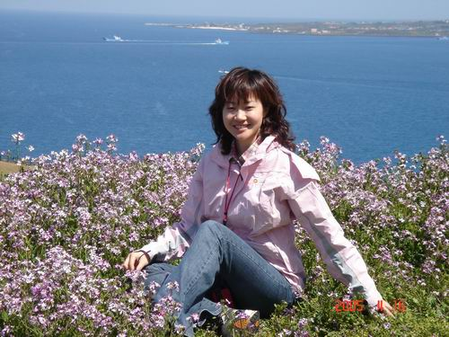
水榭，1%的幻想 @ Apr 26, 2005
生活其实就是那个样子，用你的眼睛扫射过大街上100个人，你会发现100张不同的面孔，有99张在生活面前都是苍白无力的，剩下一张也许活在幻想里。—来自6e
Shot by Christina
Sony F717
颤动的色彩

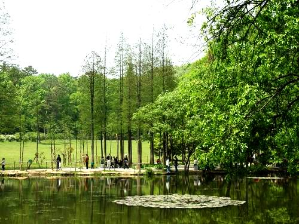


拍了9种不同构图的“水榭，这是其中一幅。
尝试 @ Apr 22, 2005
尝试1、昨天晚上下阵雨的时候我正行驶在去禄口机场的高速上，一个人，低低的音乐作为调剂窒息的车内气氛。这是3月21日拿到驾照后第一次上高速，半小时后越开越放松，时速基本保持在100~80公里之间，偶尔也会开到120公里......鼻尖上冒出细密的汗珠，后背潮潮的，胳膊有些酸，这才意识到自己僵硬的几乎要伏在方向盘上了。早听说最难开的是在高速公路上，因此格外小心谨慎。19点40分接到出差回来的他，穿着短袖拖着一个文件箱悠闲地晃出机场。事实上父母和他都不知道我要去机场，当然我也刻意没说（过去的经验告诉我，如果我说了，我将什么事情也做不成），下班后回到家特地换了舒适的运动衫和PUMA的运动鞋，可见对第一次上高速有多么重视和认真！
尝试2、因为失误将快件地址上的“东路”写成了“西路”，第二天上午快件还没到对方公司，找快件业务员解决问题，回答：“不行的，肯定不行的，要明天才能到了。”恰恰我最烦感的就是还没有去做就说不行的态度，于是要了所有联系电话，挨个打挨个问讯，后来叫了当日快件公司从“西路”的分部将文件送到了“东路”的正确地址，多增加的20元费用与要耽误的事情相比，显得微不足道。
尝试3、听一个台湾人在电视上讲企业管理之类的讲座。其中有个故事大致是这样的：在美国的一个游泳池边，一个三岁女孩独自一人跑到一个离水面1.5M高的跳板上，小女孩既害怕又好奇，当她的母亲发现她的女儿已经站在跳板上犹豫的时候，微笑地朝她竖起大拇指。这时小女孩“扑通”一声跳进水里，她却不会游泳，拼命挣扎着游到岸边，女孩的母亲抓住她的双手将她拖出游泳池，然后微笑着夸奖她的勇敢。一个7岁的台湾男孩见状也好奇地跑上跳板，可是男孩的母亲发现后象救火似的冲上前把男孩抱下来...训斥他...演讲者最后说到：东西方文化的确有很大的差异，教育方式不一样，可是我知道那个男孩永远也不可能成为跳水健将！
从小我的父母也是和台湾男孩的母亲一样的教育方式，甚至这个发卡怎么戴那件衣服怎么穿都要教育我一番，骨子里我却有些反叛。记得第一次独自去泰国旅行，犹豫了很久和家里谈，那时想着最终他们不同意我也要去，听说跟团他们同意了。第二年自助云南行（而他工作比较忙不能提前离开），鉴于前一年成功旅行归来的经验，最终勉强通过。这两次经历为今后的自助行建立了好的开端。
我们都知道在这世界上不是自己想干什么就可以干什么的，我们有很多理想，当然不可能逐一去尝试，但是一直持有的观点就是尽量不要被周围人的态度所影响，做自己觉得正确的事情，尽量按照自己的方式去走路。有些人很轻松就得到了好机会，更多的人在等待机会，当别人说这个不行那个不行时，我的心里就会嘀咕：没去尝试，怎么知道不行？首先得迈出第一步......
中医美容疗法 @ Apr 19, 2005
下午在办公室里突然无法继续容忍皮肤上的雀斑和眼角的鱼尾纹，晚上老妈居然买了黄瓜、青椒（个大不辣的）、苦瓜、苹果准备榨汁喝，只是在她喝的果蔬汁里多加了苦瓜。这是怎样一个让人振奋的晚上啊，我雀跃而积极主动地要求劳动，老妈在一边指导。记得以前老妈用红豆、绿豆、黄豆泡一夜，第二天早晨用家里的豆浆机做新鲜的豆浆给我们喝，豆浆比牛奶更适合女性饮用。
到了我这个年纪好些女人经常光顾美容院做面部保养，可是我到目前为止还是因为好奇在27、8岁的时候去过几次，这种治表不治里的美容方式一点也没有获得我的好感。倒是很青睐榨汁的方式，既保健又可以美容，如果您在皮肤上和我遇到了同样的烦恼可以尝试一下我妈妈提供的方法。平时我爱吃肉不喜欢吃蔬菜，所以这个饮食习惯我准备培养起来坚持到老。
多谢老妈了，呵呵~~~
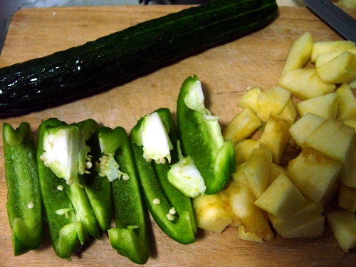
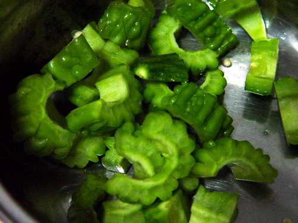

食疗方：
１、去斑美肤汁
取红萝卜、芹菜各５０克，苹果半个，雪梨１个，柠檬１／４个，放入搅果汁机中搅汁，１次饮完，每周２－３次。
２、油菜柠檬雪梨汁
取油菜５０克，柠檬１个，雪梨２个，共放搅果汁机中搅汁，１次饮完，每周３－５次。
３、胡萝卜汁
将鲜胡萝卜研碎挤汁，取１０毫升－３０毫升，每日早晚洗完脸后，用鲜汁拍脸，待干后用涂有植物油的手轻拍面部。此外，每日喝１杯胡萝卜汁也有去斑作用。因为胡萝卜中含有丰富的维生素Ａ原。维生素Ａ原在体内可转化为维生素Ａ。维生素Ａ具有滑润、强健皮肤的作用，并可防治皮肤粗糙及雀斑。
４、柠檬冰糖汁
将柠檬搅汁，加冰糖适量饮用。材供中含有丰富的维生素Ｃ，每１００克柠檬汁中含维生素Ｃ可高达５０毫克。此外还含有钙、磷、铁和Ｂ族维生素等。常饮柠檬汁，不仅可白嫩皮肤，防止皮肤血管老化，消除面部色素斑，而且还具有防动脉硬化作用。
５、西红柿汁
每日喝１杯西红柿汁或经常吃西红柿，对防治雀斑有较好的作用。因为西红柿中含有丰富的谷胱甘肽。谷胱甘肽可抑制酪氨酸酶的活性，从而使沉着的色素减退或消失。
６、果菜美肤汁
香菜、芹菜、黄瓜、草莓、柠檬各适量。将前４种果菜洗净，搅汁，滴入柠檬汁饮用，每日１次。有笑颜增白功效。
换个方式...... @ Apr 18, 2005
周六我们带朋友认识的日本朋友一起参观了南京大屠杀纪念馆。
参观完全免费，去的人很多，还有很多外国人。入口处写着两个黑色的大字：肃静。一群红色帽子上写着“江海小记者”的孩子在馆内吵吵闹闹好象在春游似的，我扯着几个叫嚷的孩子一顿训斥........
老师都是怎么拿教育工资的？和大屠杀纪念馆的气氛很不合适，这些孩子真让人感到悲哀！爱国教育不仅仅是形式！
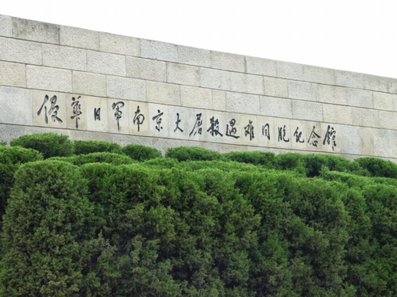
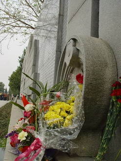
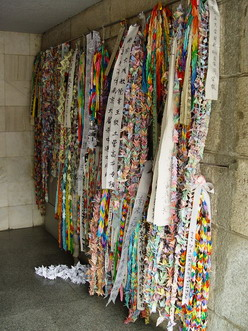
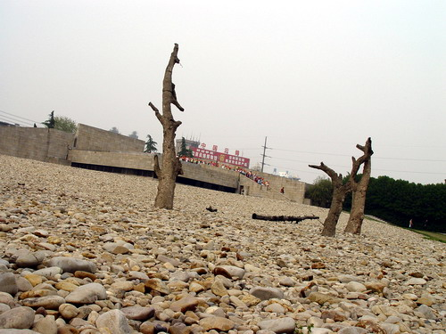
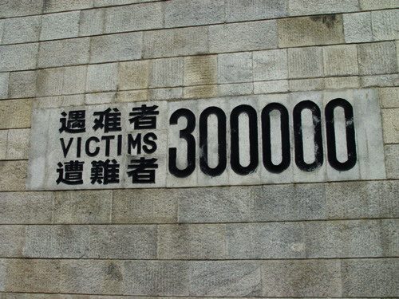
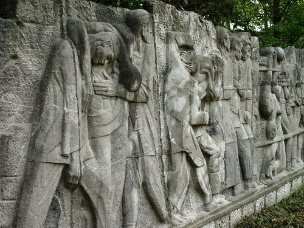
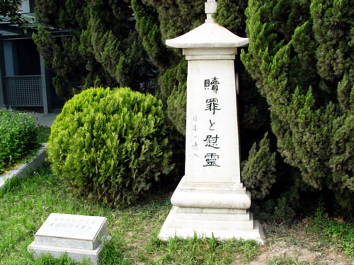
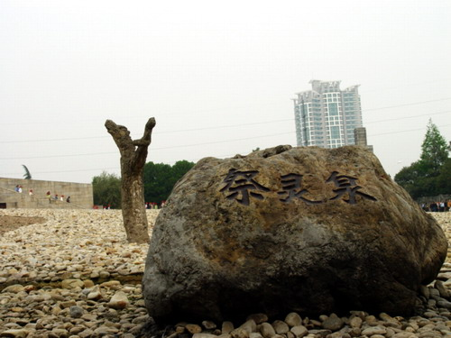
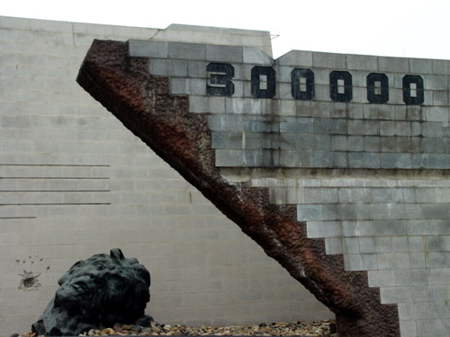
爱，由不得你做主 @ Apr 15, 2005
电视上播放一部过去看过的电影《不知不觉爱上你》，女主角是我喜欢的演员梅格-莱恩。里面有段安东尼讲的台词，大致意思是：不是你想爱上谁就能爱上谁的，爱，不受自己控制...
安东尼以前是个男招待，认识了摄影师玛姬(梅格-莱恩饰)之后和她一起来到美国，因为这个女人取得了美国居住证，并且从身无分文到拥有很多的财富。这一切都是安东尼在利用玛姬，他原以为相处久了就会爱上玛姬，这样就不存在利用和受到良心的谴责。结果他始终都没能爱上玛姬，于是和她分手了。
听到朋友说她只爱过一人。
但凡爱情都是远观的。因为那个人在外地很少和她在一起，给了她很多想象的空间。爱他是因为不了解一切有关他的细节，于是成就了心存美好想象的空间。失去恋人并不可怕，失去对爱的想象是最可怕的事情！只是当我们对爱的想象消失后一定要和人品好的男人在一起携手到老。
赢者思维 @ Apr 14, 2005
策划/伊人编辑部
2004年10月，从巴黎参加公司全球管理层大会回来，中国总裁问我从这次会上领会了“中央”的哪些主要“精神”，我先是把笔记中的要点提纲挈领地说了一遍，最后不由自主地说出在我脑中萦绕很久，我们CEO说的一句话，那就是“To win，one needs a winner’s mindset.”（要赢，就要有赢者思维）。
所谓“赢者思维”——是积极地寻找解决方案，是没有条件也要主动创造条件而非怨天尤人，将一切归咎于受条件所限；是坚忍不拔，尽最大努力，从绝望中找到希望，而不是一遇挫折就气馁，轻易放弃；是勇于反省自己，改进自己，而不是总为自己开脱，一切赖别人，怪环境；是欣赏比自己更强的人，期望有一天比强者更强；而不是妒忌强者，欺负弱者，获得一时的心理安慰。……
A、积极，主动，解决方案
B、坚持，执着，不轻易放弃
C、欣赏强者
名人的赢者思维:“赢者思维”真的不是一个独立存在的绝对概念，而往往是在和“弱者思维”的对照中显现出来的。
人生没有输赢、对错。但是，有强弱。我之所以会赢是因为心态上的坚强。你可以靠自己改变它，觉得自己强的时候，你就是赢了。
无题 @ Apr 14, 2005
又到了春季室内冷室外暖的时候，有人说双手冰凉是女人独有的温度。
为了贵州“天无三日晴”的天气，昨晚在金鹰买了件泰国制造的Colombia淡蓝色防水外套，还送了把Colombia的钓鱼折叠椅，很喜欢。之前打算在附近外贸小店淘的，发现现在小店里很难寻到质量好的正品了，想着一件好的户外防水服可以使用很多年，不能亏待自己这么喜爱四处奔走的女人。有时以为花了很少的钱买了件品牌货，捡了便宜似的开心，但很快就会感觉到这里或那里不对劲，出现许多瑕疵，事实上这是一种更大的浪费。山猫俱乐部网上商城有许多户外用品出售，价格便宜，不知道质量怎么样？
本想往返贵阳，现改成从桂林返回，这样不用走回头路。听Grace说香港大学也有组团去贵州，叫“贵州思苗行”，以访问少数民族为主，应该挺有意思的。有人说要把国内旅游放到60岁之后，60岁前尽量安排国外旅行。
陈逸飞去世了，上周日在一家小店里听画画的老板娘讲的。仅仅过去几天但已是旧闻，明年这时候人们才会想起他。
陈逸飞作品《恋歌》
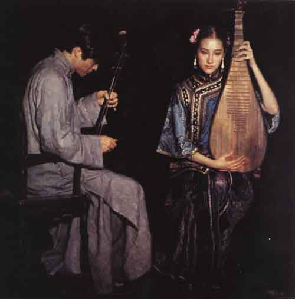
“旅行的邀约”摄影展 @ Apr 13, 2005
从屋顶上的木帷幕上看到这篇文章《如何帮助穷孩子·外一则》，由此连接到另外一个BLOG上，介绍一下他们的摄影展览，如果这里有人在上海，并且有兴趣的朋友们可以去参观。
Photographers:
王建硕（Jian shuo Wang）；王庆胜（Edward Wang）；胡祖忻（Claire Hu）
Venue:上海市莫干山路50号苏州河艺术区4号楼B座（后门）9室务色艺术车间
建议交通方式：地铁轻轨三号线中潭路站/一号线上海火车站+Taxi
Exhibition Opening:
2005年4月1日至2005年4月30日
周一至周五10点至19点，周末至零点
Special Thanks:

还是今年二月在仙炙轩的那次下午茶，Jianshuo无意间聊起摄影展的想法，引起了众人热烈的讨论。刚从越南，老挝，泰国等地独自旅行归来的我，早已忘却了旅途的疲惫，又被这个新奇的idea所吸引，跃跃欲试了。
（一）行者无疆
我远不是专业的摄影师，更不具备专业的摄影技巧和发烧级器材。而最终，促使Jianshuo，Edward，和我三人走到一起，决定无论如何也要办起这个摄影展的，应该是我们对某些事情共同而浓郁的passion：旅游。很小的时候，总有类似的命题作文叫做“我的梦想”，我的梦想不是成为伟大的科学家，也不是成为光荣的人民教师，从那时起，我最大的梦想，就是周游世界。这个在当时看来遥不可及的梦想，正在我年轻的生命中逐渐实现着。当我背负旅者的行囊走过一片又一片陌生的土地，当我告别一种文化又深陷另一种真实，当我面对文明，当我面对败落，当我一次又一次地举起手中的相机去记录眼前扑面的美，我总从心底的最深处体会到行者的乐趣。
我们愿意和所有人分享，请接受我们最诚挚的，旅行的邀约。
（二）艺术无界
Jianshuo在美国旅行，路过一个非常fancy的展览，其中的绘画作品令他喜欢备至。这时从一旁走来一个粗糙黑胖的女人，热情地介绍说，这些都是我家男人平日里画的，我们都是工人。
是的，艺术并不是那么遥远的事，只是看你怎么去看待它。上海，这座东海之滨，浦江之畔的繁华都市，迅速崛起的除了五光十色的浮躁，我们是否也应期待更多生活在这座城市里的人，去执起画笔，去端起相机，去抚摸音乐，去创作话剧。
不是只有专栏女作家才能公开她每日的思想，现在每个blogger都有了这样的机会。
不是只有专业的摄影家才能在画廊里展示他的作品，三个外行人在这里邀请您，前来响应我们诚挚的，旅行的邀约。
（三）帮助我们
“旅行的邀约”是一次纯粹的个人自发展览，我们倡导平民艺术的理念，因此不对外收取任何门票费用。这次展览总的budget在6k上下，非常感谢优友地带为我们提供了部分赞助。如果您认同我们的idea，喜欢我们的展览，欢迎用以下方式来帮助我们。
（1）在展览入口处我们会放置一个Donation Box。欢迎大家对展览给予任何形式的捐赠，请记住，这将是您对我们所付出努力的最大鼓励。
（2）如果您是一个Blogger，欢迎您在您的blog上公开地mention我们这次展览，写下您的看法，只言片语或是长篇大论，颔首称是或是尖锐批评，我们都欢迎。同时，请您不要忘记放置此次活动赞助商优友地带的Logo（Logo的URL），和我们一起对他们表示感谢。
注：凡在博客中以任何形式mention“旅行的邀约”摄影展的bloggers，请在这篇entry的comment里给我们留下相关link，谢谢你们的支持！
每一个人都可能改变你的人生 @ Apr 13, 2005
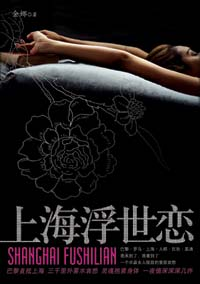
《上海浮世恋》是新女性写作代表人物之一金娜的一部长篇小说。故事以生动的语言和引人入胜的情节描述了一对青年男女的情感故事。故事场景从巴黎到罗马再到上海，小说本身亦具有时尚化和流行的因素。金娜在后记中说，她的写作受到法国艺术家保罗·克利的绘画的影响。她认为他的绘画中充满了“音乐性”，因而也将“音乐性”移植到了她的文字中。年轻的上海女孩去法国探望两地分居的丈夫，只是为了在千熹年来临的那一刻提出离婚，之后，她独自在欧洲游历，遇到了失去爱人的男人、在感情上精于算计的金装男人、喜欢扮演负心人的好男人......从上海到欧洲再回到上海，从一夜情到怀孕到意外流产，一个圈子兜回来，失去所有才洞悉一切。这里面的爱情发生过也还会再发生，字里行间的暗语，每个女人都能读懂。
我不知道这个来自于异域的完美情人弗兰克是不是真的就会给女主人公带来真正的解脱，就像我不知道如果上海让自己变得越来越像纽约或者巴黎，就真的能恢复二、三十年代远东第一大都市的那种风华。但是我知道二、三十年代的上海虽然被称为东方的巴黎，但是它从来是不用去模仿巴黎、纽约或者东京的，它知道它自己是上海，也必须是上海。这里，殖民者和冒险家们在想像着他们的上海，最激进的革命者在想像着他们的上海，最保守的旧官僚和遗老遗少们在想像着他们的上海，资本家在想像，小资产阶级在想像，普罗大众在想像，“白相人”在想像，各种格格不入的力量和想像鱼龙混杂于这里。没有一种力量能够操盘整个城市，没有一种想像能成为统一的想像，它是鲁迅们的上海，是张爱玲们的上海，是茅盾、夏衍们的上海，是新感觉派的上海，是鸳鸯蝴蝶派的上海，是九叶派的上海，在对抗和参差不齐中，便有了原创的上海，便有了遗留在这座城市里有关老上海的种种皮相。
我想，也许这个世界上真的有完美的人生、完美的爱情和完美的城市，也许我们也真的能通过模仿来得到这些完美。但问题是，我们能留下些什么东西让别人来模仿，如果没有，那么我们的人生、我们的爱情、我们的城市即使再完美，也终不过是一些寄居着别人灵魂的空壳罢了。
阅读连载:巴黎已经成为过去。赵睿和我的婚姻走向了一场没有硝烟的战争。因为不想忍受他的谴责，我高调地处理了我们之间的关系，为了我的高调，赵睿的痛恨如一根根长矛一次次戳在我的脊背上......
Vince ’s version @ Apr 11, 2005
by ken williams …
Nikon FM3A
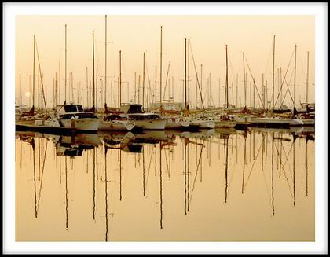
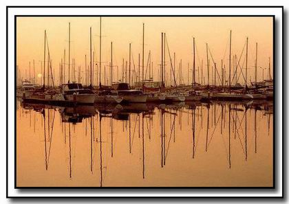

淡绿色郊外 @ Apr 10, 2005
下午和Sherry开车去中山陵，为了看雨中的水榭。景色没有阳光下的明媚热情，但别有一番味道......
Sherry下个周末去韩国旅行，她和这个时代的女孩子们一样从喜欢韩剧开始喜欢上韩国的服装和饰品，可见文化传播的作用是多么迅速有效。常常在南师大附近遇见许多韩国留学生，有些年龄还很小就来到中国学汉语。听说韩国人大多崇尚中国文化，谁的家中要是有汉字的木匾或摆设，便算是品味的象征。如今越来越多的韩国人来中国学习又是受了什么影响呢？
这次她为我拍摄的照片几乎没有对准过焦距，本来她打算这次旅行前买部数码相机的，可是大致数落一遍下来，好的数码品牌都是日本的，原来全世界人民使用质量好的数码相机都是日本的？！这是不是多少有些无奈？看看我们衣橱里的衣服，有多少是使用YKK拉链的？
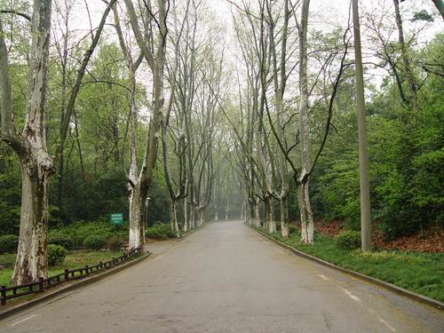

星期六早晨 @ Apr 09, 2005
早晨习惯性的在8点左右醒来，窗外阴天，依稀记得凌晨外面有下雨的声音。这两天有许多事情要做，周末才是真正属于自己支配的时间，5个工作日8小时之外几乎也都是为了8小时而存在的。已不太会去想工作本身...只是每天工作着，为了那些属于自己支配的时间。
五一旅行计划因为各种原因最终确定在贵州黔东南线，机票下周五出票，如果有充足的时间我更愿意选择火车行进到贵州，沿路风景也不容错过。鉴于2003年春节自助游云南的经验，整理和了解大量当地资料是自助旅行前必须做仔细的工作，有些小村寨交通不便，自驾车旅行在贵州应该更适合。贵州的5月多雨山岭间温差大，耐滑防水的鞋和保暖外套要带上。昨天早晨看见三辆中北巴士载着热闹的小学生春游场景，和他笑谈小时侯为春游高兴外还因为不用上课，如今长假旅行也是差不多的心情吧。
星期六早上的九点，算不算早？不知道下雨后的水榭怎么样了？
陈坤 – 逆行列车.wma
所有的乘客火车开动了
欢迎你乘坐逆行的列车
前方的路程会发生什么
你没有选择也没有或者
前方会有着相反的规则
错的也就会变成了对的
到底该怎样怎么样取舍
怎么分对错怎么样闪躲
你得到过什么
到底值不值得
失去后总是问为什么
用扑克来占卜
如何能够摆脱
这枯燥的角色
离开这庸俗的小说
做一个逆行的我
单色叶 @ Apr 08, 2005
工作...究竟是平息不安还是让人更加不安？
看着这个无声世界中的他们，脸上洋溢着心意满足的神情，如若不是真的满足，那一定是演技太好。在上班和下班之间的过程每天都是相同的，发传真时看着相同的风景，打着重复的电话号码听着同样的声音写着相似的数字和时间回复着差不多的E-MAIL…..一切如此平缓行进毫无异常。
沉默如春天的一片单色叶！
Dear Friend @ Apr 07, 2005
背景音乐
Dear Friend.ram-顺子
跟夏天才告别转眼满地落叶
远远的白云依旧无言
像我心里感觉还有增无减
跟去年说再见转眼又是冬天
才一年看着世界变迁
有种沧海桑田无常的感觉
oh~ friend 我对你的想念
此刻特别强烈我们如此遥远
朋友孩子的脸说着生命喜悦
如果说我们依然相恋
说不定在眼前是另外情节
oh~ friend 我对你的想念
此刻特别强烈这么多年
oh~ friend 我对你的想念
此刻特别强烈如此遥远
friend~
静静看着... @ Apr 07, 2005
中午开车去中山陵兜风，到了水榭附近闻到新鲜植物的芳香，满眼丰富清淡的自然界色彩，似有似无的，让人恍惚置身于水彩画里，非常美的感受。不想走，就想静静的看着。晚饭后坐在餐桌旁把摸这几天未来得及收拾起来的首饰，想拍摄下来，包括今晚买的白玫瑰。
生活是内心最真实的感受，不是照葫芦画瓢的形式所能支撑的。
这世上谁都有秘密，但从某一刻起我不再有任何欲望想知道他人的秘密。好也好坏也好，都是每个人对自己生活的选择，现在我只愿是穿梭于水榭的一阵风，逍遥在江南短暂的春天里！
答应 @ Apr 05, 2005
尤其喜欢这句“我喜欢对着电话唱歌给你听，只要能听见你的声音我就开心”，听到这里的时候有股暖流涌上来，让人感动。酸酸涩涩的恋爱季节已经过去，但仍然怀念恋爱着的感觉。有部日本电视连续剧《好久没恋爱》，要是换成韩国人拍会不会是另外的感受？里面描述三个30多岁女人的故事，很有些同感。只是日本人表述的有点缺乏美感。
百态街头 @ Apr 04, 2005
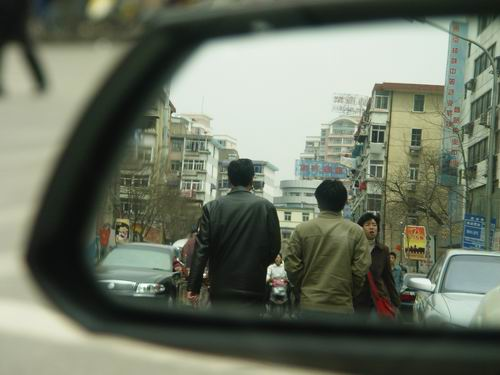

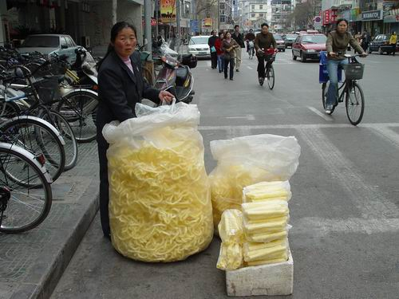

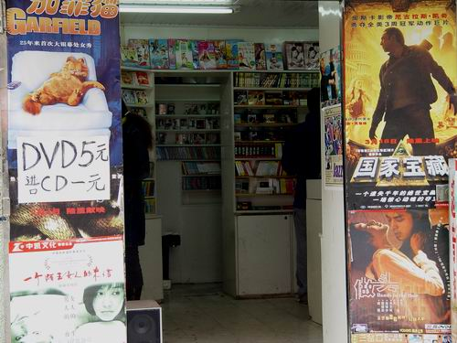


寥寥数语话周末 @ Apr 02, 2005
疯狂烦躁的下午，时常为上不了局域网而停下手上的工作，这是怎样一个让人心脏出位的网络？
匆匆结束所有琐碎的时间，未必来得及收拾好下班的东西，寥寥数语这就要离开。不得不说周末的感觉很棒，只是这天气一定要配合才好。
明天将披着我那青黄不接的头发前往上海。
—上周末在上海拍摄的照片（冈本、Christina、Angie）

静谧的瞬间 @ Apr 01, 2005
我们有真正快乐的时间，比如一小时两小时一天两天...但是我们无法拥有整个人生如影随形般的快乐。于是，下一段快乐成为人生长途跋涉的起因。我，现在的那点快乐仅是心灵静谧的瞬间。
除了工作、写BLOG、做家务和恋着身边的“思考者”之外我不学无术的呼吸着每日或污浊或清净的空气。我们总是在计划着下一年的生活，计划也在等待中流逝，日本旅行从3月中旬推到五一，现在又要推到遥遥无期。我在等待他的空闲时间。另外还想安排一些有关兴趣方面的学习课程。
昨晚看了一部片子《The Other Side of Heaven》（海啸生死恋），里面讲一个传教士被派到位于太平洋南部汤加群岛的一个仅有几百人的孤岛上传教，虽然电影故事老套，但真正被吸引的是汤加的风土人情和作为传教士艰险传教的过程。据说1867年7月12日卫理工会的传教士托马斯.贝克乘船来到斐济最大岛维提岛。他此行的目的是以基督教教义“感化”当地土著，使他们能够颁依上帝之爱；二是为西方与土著之间的贸易谈判。结果因为贝克自做主张将首领头上的梳子取下来，把自己的帽子戴到了对方头上。这可是当地的大忌！于是愤怒的土著不由分说将贝克乱斧砍死。然后按照对待战俘的方式，在贝克身上涂了油架到火上烤。然后岛民们围坐在一起举行隆重的仪式，将尸体分吃的干干净净。没有哪个地方像斐济，先是被西方人贬成了野蛮的“食人岛”，接着又被西方人褒成了天堂、世外桃源，世界最富有的人与最出名的人都爱往那儿跑。斐济的前世今生，真真是一会儿碧落一会儿黄泉......什么时候我们也去斐济旅行？